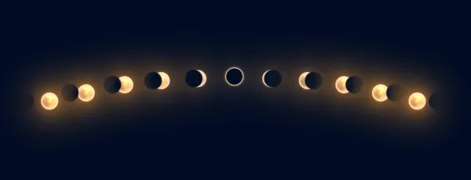

Ela era arte.
Mais bonito que as pinturas de Van Gogh, que os olhos de Capitu e as músicas de Chico Buarque.
Nenhuma arte de Pablo Picasso chegava aos pés dos seus traços.
Ela era aquelas metáforas com significado profundo.
Era aqueles livros que quanto mais você lia mais você queria ir mais fundo.
Podiam se passar dias, ela sempre me surpreendia.
Não importava onde estava e nem com quem estaria
Todos podiam estar olhando para mim, mas era nela que eu me via
